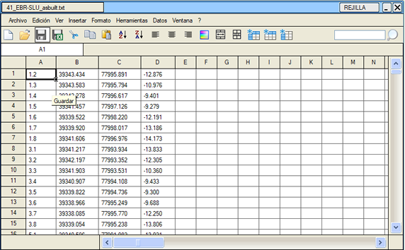
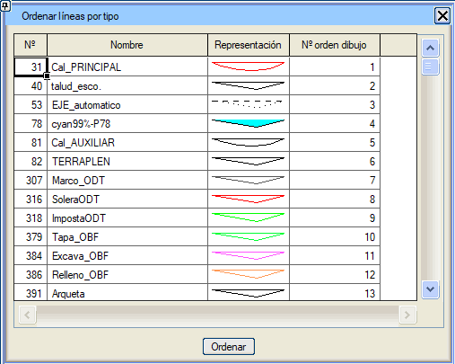

Veri Tablosunu Düzenle
Sütun
ve satır formatında veri tablosu. Txt ve diğer formatlardaki verileri
görüntülemek ve bunları excel formatında oluşturmak için. Birçok
istram menüsü, yönetmelik sonuçları, enkesit verileri vb. için bu veri tablolarını
oluşturur.
Excel sayfalarından veri kopyalayıp yapıştırmaya izin verilir (sadece değerler).

Yardımcı Araçlar
Çizimler için çeşitli dönüşümler gibi farklı yardımcı araçların bulunduğu bir alan buluruz:
Çizimi .per'e Dönüştür
Çizimi .pkz'ye Dönüştür
Çizimi TOC'ye Dönüştür
Çizgiler veya çizim elemanları üzerinde hesaplama:
Aşağıdaki durumlarda elemanlar önceden seçilebilir veya kullanılacak araç seçildikten sonra seçilebilir:
Aşağıdaki farklı merkezler hesaplanabilir:
Çizgileri Türe Göre Sırala: Çizim için çizgileri sıralamaya izin verilir, daha düşük sıra numaraları önce çizilir.

|